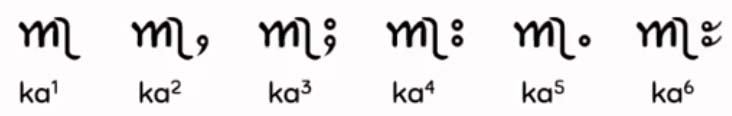

This page brings together basic information about the Ahom script and its use for the Tai Ahom language. Although it is difficult to obtain details about modern usage of the Ahom script, it aims to provide a brief, descriptive summary of the basics of the modern, printed orthography and typographic features, and to advise how to write Ahom using Unicode.
𑜒𑜑𑜪𑜨 is a Southeast Asian abugida, used to write the Tai Ahom language in northeast India. The language was one of the main Tai languages of Assam for 500 years until it was replaced by Assamese. At the beginning of the 2oth century it was largely extinct, but is currently undergoing a revival. Very few speakers of Ahom remain.
Ahom is used only as a second language and has no ethnic community. It belongs to the Kra-Dai language family. It is no longer the norm that children learn and use this language.eth It used to be the state language of Ahom kingdom. There have been efforts to revive the language in recent times, and a reconstructed version is taught in various educational institutions in Assam by AHSEC and Dibrugarh University.wl
Unicode 17 has 1 dedicated block, comprising 65 characters.
The Ahom script is an abugida, ie. each consonant contains an inherent vowel sound. See the table to the right for a brief overview of features for the modern Ahom orthography.
Ahom text runs left-to-right in horizontal lines. There is no case distinction. Words are separated by spaces in modern Ahom writing.
Modern Ahom represents consonant sounds using 22 basic letters, but some additional alternative glyph shapes are encoded separately, and a further set of 7 letters were created especially for a single publication related to Pali.
Ahom has 3 combining marks to represent medial consonants. Syllable codas are all marked with a visible killer mark. There are no conjuncts.
The inherent vowel is a. It is killed using 𑜫, which is always visible.
Post-consonant vowels are written using vowel signs that are nearly all combining marks, but notably 𑜚 and perhaps a couple of others take on roles as composite vowel sign components. Ahom (like Thai and Lao) makes heavy use of composite vowel signs, to represent plain vowels as well as diphthongs and rhymes.
There is one pre-base vowel sign, but no circumgraphs. Composite vowel signs, however, may surround the base on several sides. It is also common for multiple combining marks to exist above the base.
Tai Ahom is tonal, and some examples of modern text use Shan-like combining marks to indicate tone. The Unicode Standard, however, makes no mention of hwo to indicate tone.
Standalone vowels are written by adding vowel signs to 𑜒.
Ahom has a set of native digits, though some are words rather than symbols. Use of the digits in historical documents is not fully understood, and use in modern Ahom is not clear from the sources.
Wikipedia says that Ahom has lost its tones, but modern YouTube tutorials refer to the following 6 Ahom tones, and mark them in their term lists and educational materials.
1
Rising
˨˧
2
Low
˨
3
Mid
˧
4
High
˦
5
High-falling
˦˨
6
Mid-falling
˧˨
Structure
tbd
Vowels
Vowel summary table
This table summarises only basic vowel to character assignments. Click on the phonetic transcriptions for more detail.
ⓘ represents the inherent vowel. The table shows dependent vowels only. Standalone vowels simply use the vowel signs shown after the standalone carrier.
The inherent vowel for Ahom is pronounced a. So ka is written by simply using the consonant letter.
eg.
𑜀𑜃𑜫
𑜀,𑜃𑜫
𑜉𑜀𑜫
𑜉,𑜀𑜫
Since Ahom consonants normally include an inherent vowel, the orthography has ways to indicate a consonant that is not followed by a vowel sound. See novowel.
Post-consonant vowels
The list of vowels below was pulled together from various sources. No one resource included them all.
Ahom (like Thai and Lao) makes heavy use of composite vowel signs to represent plain vowels as well as diphthongs and rhymes.
There is one pre-base vowel sign, but no circumgraphs. Composite vowel signs, however, may surround the base on several sides. It is also common for multiple combining marks to exist on the same side of the base.
All vowel signs are combining marks, typed and stored after the base consonant, and the glyph rendering system takes care of the positioning at display time. The glyphs used to represent vowels, whether alone or in composite vowel signs, are arranged around a syllable onset, which may be 2 consonants, rather than just around the immediately preceding consonant.
Plain vowels
𑜀𑜢
ki
Ahom writes 12 plain vowel sounds as follows. A third of these vowel sounds are written using composite vowels. The dotted circle shows the location of the consonant(s); where an item has 2 dotted circles that vowel is only used in closed syllables.
◌𑜢◌,◌𑜣,◌𑜢𑜤,◌𑜢𑜤𑜚𑜫,◌𑜤◌,◌𑜥,◌𑜦,◌𑜤𑜚𑜫,◌𑜦𑜧,◌𑜨◌,◌𑜦𑜡,◌𑜠,◌𑜡
The consonant letter 𑜚 is used as a surrogate for the sound w.
It's not clear how 11720 is used, since it appears to represent the sound of the inherent vowel.
Hosken & Morey describe 2 more combinations, shown below, as plain vowels.
◌𑜡𑜠,◌𑜨𑜡
Observation: The second of these is described later as -wa (see onsets). There are a couple of similar configurations below without pronunciation information that could therefore perhaps represent -wɔː and -wa(ː)?
Diphthongs
The following are diphthongs.
𑜢𑜚𑜫,𑜤𑜐𑜫,𑜩𑜨,𑜧,𑜧𑜨,𑜩,𑜚𑜫,𑜨𑜚𑜫
In addition to the consonant letter 𑜚, in this list we also have the consonant 𑜐.
Rhymes
These are syllable rhymes.
𑜢𑜪,𑜢𑜪𑜤,𑜪𑜤,𑜧𑜪,𑜪𑜨,𑜪
Additional vowels
Hosken & Morey list 10 more vowel combinations, but unfortunately without pronunciation information. They are described as less common sequences.
Once again, consonant letters appear in some of these sequences. In this case, 𑜂 appears in 3 of the items.
Certain vowels are also duplicated at the end of a word to signal that the word itself should be repeated (see abbrev).
Composite vowel signs
𑜀𑜢𑜤𑜚𑜫
kɯː
A large majority of vowel sounds in Ahom are produced by combining 2 or more vowel signs.
Of the 26 more common vowels, diphthongs and rhymes mentioned above, 15 are composite vowel signs: 7 have two components, 5 have 3 components, and 1 has 4 components. Components may appear on all four sides of the base.
The components of a composite vowel sign need to be typed and stored in a particular order: pre-base, above, below, following (see also charorder).
Pre-base vowel signs
𑜀𑜦
ke
𑜦
The short e sound is written using 𑜦, which appears to the left of the base consonant letter or cluster. It also occurs in various composite vowels.
eg.
𑜏𑜦𑜂𑜫
This is a combining mark that is always typed and stored after the base consonant(s), ie. the codepoints follow the order in which the items are pronounced. The rendering process places the glyph before the base consonant without changing the code points. The following shows the sequence of code points that make up the word just above.
𑜏,𑜦,𑜂𑜫
Vowel length
Ahom uses different vowel signs, or combinations of vowel signs, to differentiate between long and short vowels.
eg.
𑜀𑜤𑜆𑜫 𑜀𑜥
According to Hosken & Morey, 11724 can also be used at the end of a syllable to indicate vowel length.up,2
Standalone vowels
𑜒𑜢
i
Ahom has no independent vowel letters, but instead uses 11712 as a carrier for standalone vowels. This can represent a zero or glottal stop onset. The vowel to be pronounced is indicated by attaching a vowel sign.
eg.
𑜒𑜢𑜃𑜫
Used alone, this letter represents the standalone vowel a.
eg.
𑜒𑜊𑜫
Further examples can be found in the following list, which shows how to write each of the plain vowels listed above as standalone vowels.
𑜒𑜢,𑜒𑜣,𑜒𑜢𑜤𑜚𑜫,𑜒𑜤,𑜒𑜥,𑜒𑜦,𑜒𑜤𑜚𑜫,𑜒𑜦𑜧,𑜒𑜨,𑜒𑜦𑜡,𑜒𑜠,𑜒𑜡
Tones
Although Ahom was a tonal language, the Unicode proposal makes no mention of it and no provision is included for tone marks in Unicode's Ahom block.
However, a video on YouTubeyt3 that introduces the Tai Ahom culture and language uses tone marks in its vocabulary lists that are the same as those used for Shan in the the Myanmar script.

Six Tai Ahom tones indicated using Myanmar script tone marks.
Tone 1 is unmarked, and the other tones use glyphs that look like the following. The Noto Ahom font used for this page doesn't support the use of these glyphs. In running text a dotted circle precedes them. Tone 1 is unmarked.
–,ႇ,ႈ,း,ႉ,ႊ
Vowel sounds to characters
This section maps Tai Ahom vowel sounds to common graphemes in the Ahom orthography.
Independent vowels (not shown) are written by simply following 𑜒 with one of the following dependent vowels.
Plain vowels
i
𑜢Used in closed syllables.
iː
𑜣
ɯ
𑜢𑜤
ɯː
𑜢𑜤𑜚𑜫
u
𑜤Used in closed syllables.
uː
𑜥
e
𑜦
oː
𑜤𑜚𑜫
ɛː
𑜦𑜧
ɔ
𑜨
ɔː
𑜦𑜡
a
𑜠
𑜒Independent vowel (and vowel carrier).
aː
𑜡
Diphthongs & rhymes
iw
𑜢𑜚𑜫
im
𑜪𑜢
ɯm
𑜪𑜢𑜤
ui
𑜤𑜐𑜫
um
𑜪𑜤
ɛm
𑜪𑜧
eo
𑜧
ow
𑜧𑜨
oi
𑜩𑜨
ai
𑜩
aːi
𑜩
aw
𑜨𑜚𑜫
aːw
𑜚𑜫
am
𑜪
aːm
𑜪𑜨
Vowel absence
Vowel absence principally occurs either when a consonant is a syllable coda, or when a consonant is part of a consonant cluster.
The suppression of the inherent vowel in a syllable coda is indicated using the 𑜫 diacritic. It is always visible, and doesn't cause any conjunct forms.
eg.
𑜃𑜨𑜂𑜫𑜄𑜡
Where the cluster involves a medial consonant in an onset, Ahom uses one of the dedicated medial combining marks (see onsets).
Consonants
Consonant summary table
This table summarises only basic consonant to character assignments. Click on the phonetic transcriptions for more detail.
The righthand column contains letters that are only used in one publication for Pali scriptures.
Observation: It seems likely that aspirated, voiced plosives and retroflex consonants are rarely used (if ever) for native Ahom text. They may be present to support Sanskrit or other transcriptions.
The following division of consonants correspond with online educational materials, and what they do and don't show. These seem to be the basic consonant letters used in Ahom.
Click on each letter for more details and for examples of usage.
𑜆,𑜇,𑜈,𑜄,𑜌,𑜓,𑜋,𑜊,𑜀,𑜁,𑜏,𑜑,𑜉,𑜃,𑜐,𑜂,𑜍,𑜎
Another set of characters is treated rapidly, and seems to be less frequently used. These are mostly voiced, aspirated stops. These come after the preceding letters in the block encoding.
𑜘,𑜙,𑜕,𑜗
There is a pattern to many of the shapes. Aspirated voiceless plosives have a circle to the right side. Aspirated voiced plosives add a small oval loop below the voiceless form. Retroflex plosives (see below) are indicated by a dot inside the non-retroflex glyph.
Alternate shapes
Ahom has 3 code points for ‘alternate’ shapes. They are:
𑜚,𑜅,𑜖
It's not entirely clear from the sources consulted what is the function of these, but some clues came out of the research.
w is regarded as an allophone of b, and despite its name the shape of 𑜚 is consistently used as a component in composite vowels (see plainV for examples). It isn't seen in onsets. Although it wasn't added to Unicode until 2015, and then for ‘academic use’up2, its use as a composite vowel sign component seems to be widespread.
eg.
𑜎𑜚𑜫
𑜏𑜢𑜤𑜚𑜫
Only a handful of spellings in Wiktionary use the standard glyph for the same vowels, eg.
𑜁𑜤𑜈𑜫
Hosken & Morey say that 𑜅 is used for the ligated form of tɟ, ie. 𑜅𑜊.
𑜖 is generally regarded as a font variant of 𑜕, but in rare cases it may be used separately.
There is also an alternate shape for the -r- medial consonant (see onsets).
Pali letters
Unicode 14 added 7 additional characters that are only used in the Pāḷi Tipiṭaka, published as part of the World Tipiṭaka in Tai Scripts: 15-Script Set.
𑝁,𑝂,𑝃,𑝄,𑝀,𑝅,𑝆
Onsets
Ahom has 3 dedicated combining marks for medial consonants.
𑜞,𑜟,𑜝
eg.
𑜀𑜟𑜨
𑜓𑜝𑜪
𑜨𑜡 represents a -wa sound. Hosken & Morey show a ligated form of these two vowel signs, which doesn't appear in the font used for this page.
Codas
Syllable codas are written using ordinary consonants followed by 𑜫. This vowel-killer is always visible.
eg.
𑜀𑜢𑜆𑜫
𑜀𑜤𑜆𑜫𑜍𑜤
Consonant sounds to characters
This section maps Ahom consonant sounds to common graphemes in the Ahom orthography.
p
consonant𑜆
pʰ
𑜇
b
𑜈
bʱ
𑜘
t
𑜄
𑜅
tʰ
𑜌Alternative shape, used for ligatures (maybe more).
d
𑜓
dʱ
𑜔
cʰ
𑜋
ɟ
𑜊
ɟʱ
𑜙
k
𑜀
kʰ
𑜁
ɡ
𑜕
alternate 𑜖Alternative shape.
ɡʱ
𑜗
s
𑜏
h
𑜑
m
𑜉
n
𑜃
ɲ
𑜐
ŋ
𑜂
-w
composite vowel component𑜚Alternative shape for BA, used as a composite vowel sign component. Often, but not always, represents a -w sound.
r
𑜍
medial𑜞
medial𑜟Alternative shape.
l
𑜎
medial𑜝
Pāḷi Tipiṭaka letters
The following letters were created for one Pali-related publication only, and are not used in normal text.
ʈ
𑝁
ʈʰ
𑝂
ɖ
𑝃
ɖʱ
𑝄
c
𑝀
ɳ
𑝅
ɭ
𑝆
Symbols
The Unicode Ahom block has one code point with the general category of symbol: 𑜿 is used like an exclamation mark.
Encoding choices
This section offers advice about characters or character sequences to avoid, and what to use instead. It takes into account the relevance of Unicode Normalisation Form D (NFD) and Unicode Normalisation Form C (NFC)..
Although usage is recommended here, content authors may well be unaware of such recommendations. Therefore, applications should look out for the non-recommended approach and treat it the same as the recommended approach wherever possible.
Codepoint sequences
Combining marks always follow the based character. Where present, characters in a syllable should always occur in the following order.
A consonant or independent vowel.
Medial consonants.
A pre-base dependent vowel.
Dependent vowel(s) that appear above the base.
Dependent vowel(s) that appear below the base.
Vowel sign AA.
Vowel sign A.
A final consonant letter or combining mark.
Numbers
Digits
The Unicode proposal lists the following digits for the non-decimal Ahom number system.
𑜰,𑜱,𑜲,𑜳,𑜴,𑜵,𑜶,𑜷,𑜸,𑜹,𑜺,𑜻
The digits for 3, 4, 5, and 20 are all just the words for those numbers, spelled out. However, all the digits are encoded as separate code points.
Hosken & Morey provide the following examples of numbers written using the Ahom system. Click on the numbers to see the composition.
𑜲𑜻𑜺𑜸
𑜶𑜻𑜺𑜶
Digits from other systems are often mixed in with the Ahom digits, particularly those from Burmese, which are listed below.up,4
၀,၁,၂,၃,၄,၅,၆,၇,၈,၉
It is also not uncommon for numbers to mix both digits and spelled out numbers, such as the following.up,4
𑜻𑜺𑜒𑜢𑜄𑜫
Hosken & Morey add: “There is an expectation that if modern Ahom were to start using the digits, that glyph variation would begin to occur and that the use of AHOM NUMBER TWENTY (U+1173B) would be dropped.”
Context-sensitive shaping is needed for a number of Ahom vowel sign combinations that have ligated forms.
Combining marks need to be positioned relative to the base characters, and since a large share of the vowel sounds are written using composite vowels, many of which involve multiple glyphs on the same side of the base, it is important to place vowel signs relative to each other.
Shaping examples
The combination 𑜢𑜤 has a special joined shape, except when it follows 𑜓, 𑜃, 𑜐 or 𑜂. These are excluded to avoid confusion with other letters.up,5
eg.
𑜁𑜢𑜤𑜃𑜫
𑜏𑜢𑜤𑜚𑜫
𑜃𑜢𑜤𑜚𑜫 𑜉𑜥
In some combinations 𑜪 ligates with the previous vowel sign, appearing to its left and sometimes joined.up,5 For example, compare the rendered glyphs with the sequences of code points in the following.
𑜒𑜢𑜪 im𑜢𑜪
𑜒𑜢𑜪𑜤 um𑜢𑜪𑜤
𑜒𑜧𑜪 ɛm𑜧𑜪
Hosken & Morey describe another sequence that is ligated, but this time most of the work of creating the ligated glyphs is achieved by using an alternative letter. The sequence is 𑜅𑜊.up,5
𑜅𑜊 tɟa
Hosken & Morey listup,5 a few other ligatures and font variants on page 5 of the Unicode proposal, most of which are not yet supported.
Typographic units
Word boundaries
In modern Ahom and some manuscripts words are separated by spaces.
Other manuscripts use no inter-word spacing.up,4
Graphemes
Graphemes in Ahom consist of single letters or letters with one or more combining marks. This means that text can be segmented into typographic units using grapheme clusters.
Phrase, sentence, and section delimiters are described in phrase.
Punctuation & inline features
Phrase & section boundaries
The Unicode proposal lists 4 punctuation marks. It is unclear from the sources used whether modern usage of Ahom incorporates additional punctuation.
phrase
𑜼
sentence
𑜽
𑜿
paragraph
𑜾
𑜿 is a symbol that is used as an exclamation mark.
Abbreviation, ellipsis & repetition
Ahom word reduplication can be signalled by one of the following vowel duplications at the end of the initial word.up,2